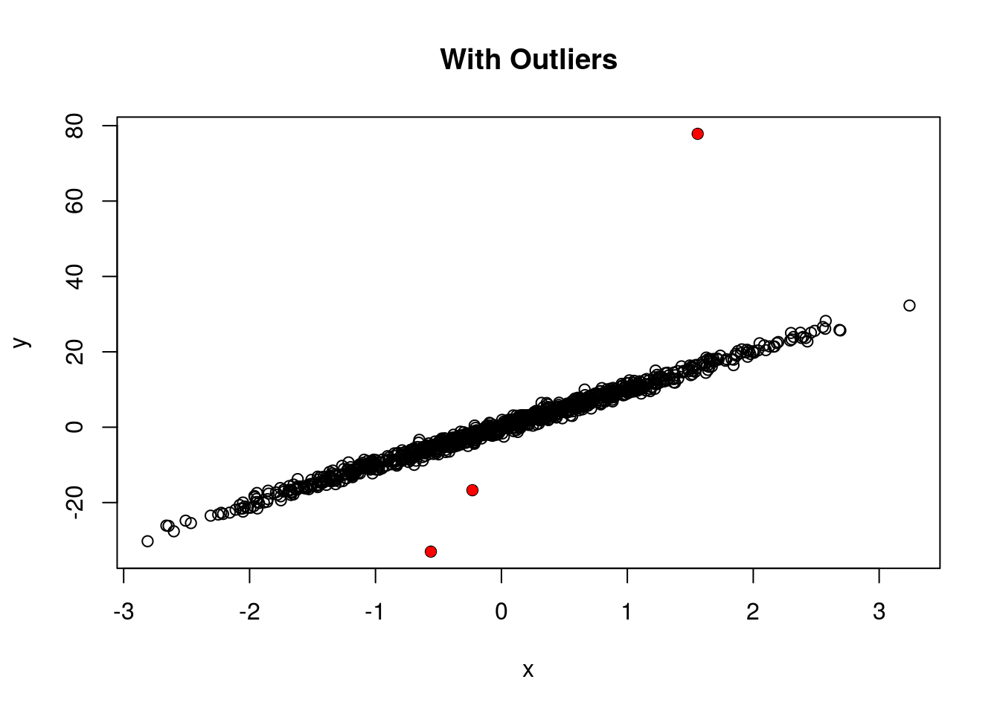
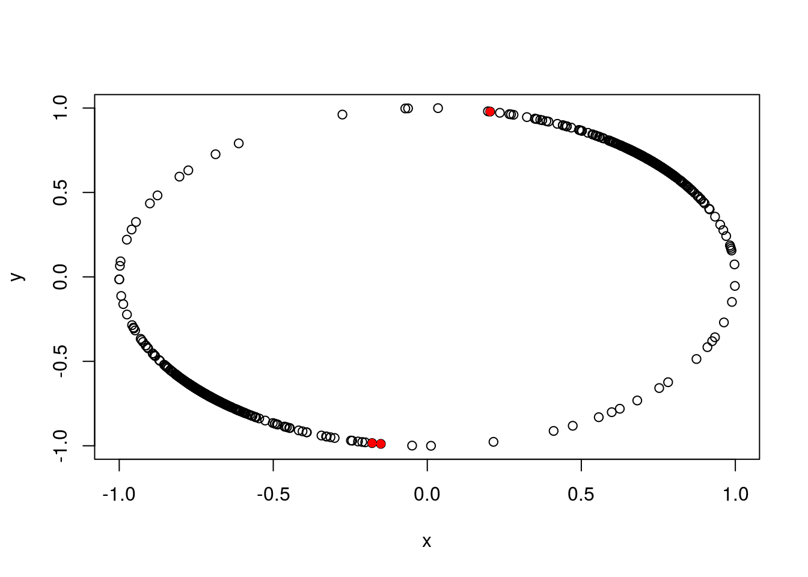
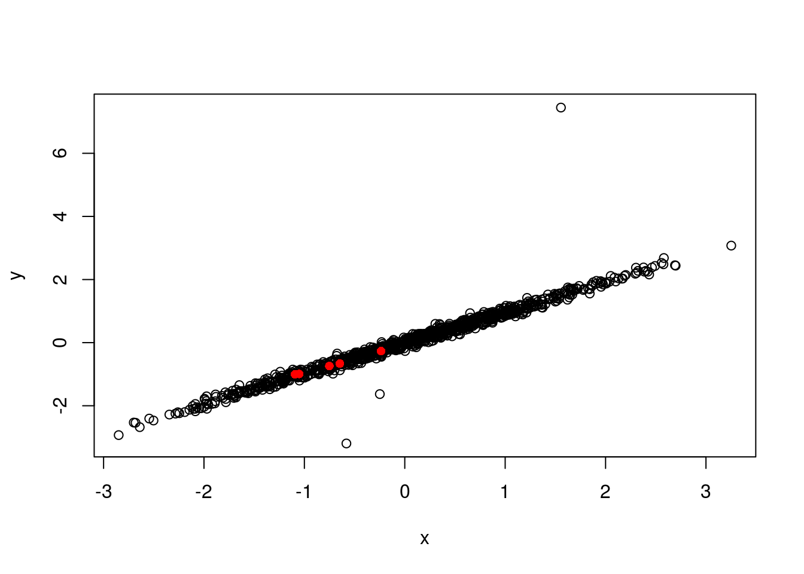
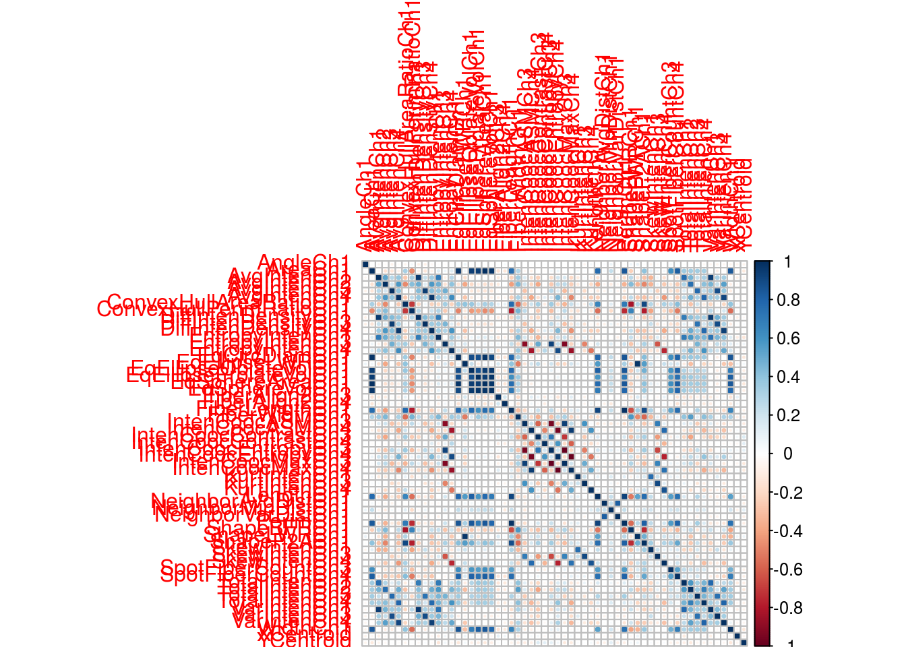

library(AppliedPredictiveModeling)
data(segmentationOriginal)Basic selection methods and tips. Check here for a general introduction.
segData = subset(segmentationOriginal, Case=="Train")
cellID = segData$Cell
case = segData$Case
class = segData$Class
# Remove the columns,
# this can also be done by
# segData = segData[, -(1:3)]
# which is prefered in programming
segData = subset(segData, select=-(Cell:Class))
statusColNum = grep("Status", names(segData))
segData = segData[, -statusColNum]Data preparation can make or break a model’s predictive ability. How the predictors enter the mdel is important.
Most liner models benefit from standardizing predictors. The only real downside is a loss of interpretability of the individual values since the data are no longer in the original units.
\[ \text{skewness} = \frac{\sum (x_i - \bar{x})^3}{(n-1) v^{3/2}} \] where \[ v = \frac{\sum (x_i - \bar{x})^2}{n-1} \]
Box-Cox Transormations(Box and Cox, 1964) can be used to resolve skewness:
\[ x^* = \left\{ \begin{array}{l l} \frac{x^\lambda - 1}{\lambda} & \quad \text{if $\lambda \neq 0$}\\ \log(x) & \quad \text{if $\lambda=0$} \end{array} \right. \]
To calculate skewness:
library(e1071)
skewness(segData$AngleCh1)## [1] -0.02426head(sapply(segData, skewness))## AngleCh1 AreaCh1 AvgIntenCh1 AvgIntenCh2 AvgIntenCh3 AvgIntenCh4
## -0.02426 3.52511 2.95919 0.84816 2.20234 1.90047Box-Cox transformation:
hist(segData$PerimCh1, breaks=30, main="Before BoxCox Transformation")
library(caret)## Loading required package: lattice
## Loading required package: ggplot2periTrans = BoxCoxTrans(segData$PerimCh1)
periTrans## Box-Cox Transformation
##
## 1009 data points used to estimate Lambda
##
## Input data summary:
## Min. 1st Qu. Median Mean 3rd Qu. Max.
## 47.7 64.4 79.0 91.6 103.0 460.0
##
## Largest/Smallest: 9.63
## Sample Skewness: 2.59
##
## Estimated Lambda: -1.1nsk = predict(periTrans, segData$PerimCh1)
hist(nsk, breaks=30, main="After BoxCox Transformation")When outliers are present, first make sure that the values are scientiffically valid and that no data recording errors have occurred. Great care should be taken not to hastily remove or change values, especially if the sample size is small. With small sample sizes, apparent outliers might be result of a skewed distribution where there are not yet enough data to see the skewness.
Tree-based classifications suppport vector machines for classification generally are resistant to outliers.
Spatial sign transformation is designed to resolve outliers: \[ x_{ij}^* = \frac{x_{ij}}{\sum^P_{j=1} x^2_{ij}} \]
set.seed(123)
x = rnorm(1000)
y = 10 * x + rnorm(1000)
y[1:3] = 5 * y[1:3]
d = data.frame(x=x, y=y)
plot(d, main="With Outliers")
points(x=d[1:3, "x"], y=d[1:3, "y"], col="red", pch=16)
dTrans = preProcess(d, method=c("spatialSign"))
newd = predict(dTrans, d)
plot(newd)
points(x=newd[1:3, "x"], y=newd[1:3, "y"], col="red", pch=16)
The main method of dim reduction is PCA, but it is a unsupervised transformation.
trans = preProcess(segData,
method=c("BoxCox", "center", "scale", "pca"))
trans##
## Call:
## preProcess.default(x = segData, method = c("BoxCox", "center",
## "scale", "pca"))
##
## Created from 1009 samples and 58 variables
## Pre-processing: Box-Cox transformation, centered, scaled,
## principal component signal extraction
##
## Lambda estimates for Box-Cox transformation:
## Min. 1st Qu. Median Mean 3rd Qu. Max. NA's
## -2.000 -0.500 -0.100 0.051 0.300 2.000 11
##
## PCA needed 19 components to capture 95 percent of the variancesegNew = predict(trans, segData)
head(segNew[, 1:5])## PC1 PC2 PC3 PC4 PC5
## 2 1.5685 6.2908 -0.3333 -3.063 -1.3416
## 3 -0.6664 2.0455 -1.4417 -4.701 -1.7422
## 4 3.7500 -0.3916 -0.6690 -4.021 1.7928
## 12 0.3769 -2.1898 1.4380 -5.327 -0.4067
## 15 1.0645 -1.4647 -0.9900 -5.627 -0.8650
## 16 -0.3799 0.2173 0.4388 -2.070 -1.9364First modeler should be ware about why values are missing, as missing itself can be a kind of message. Several methods can be used to impute missing values, as shown below.
d[21:25, "y"] <- NA
d[20:27, ]## x y
## 20 -0.4728 -2.979
## 21 -1.0678 NA
## 22 -0.2180 NA
## 23 -1.0260 NA
## 24 -0.7289 NA
## 25 -0.6250 NA
## 26 -1.6867 -16.638
## 27 0.8378 10.031trans = preProcess(d, method=c("center", "scale", "medianImpute"))
newd = predict(trans, d)
newd[20:27,]## x y
## 20 -0.4930 -0.3114
## 21 -1.0930 0.2061
## 22 -0.2361 0.2061
## 23 -1.0509 0.2061
## 24 -0.7513 0.2061
## 25 -0.6465 0.2061
## 26 -1.7171 -1.6231
## 27 0.8285 0.9379plot(newd)
points(newd[21:25,], pch=16, col="red")trans = preProcess(d, method=c("center", "scale", "knnImpute"))
newd = predict(trans, d)
newd[20:27,]## x y
## 20 -0.4930 -0.3114
## 21 -1.0930 -1.0048
## 22 -0.2361 -0.2659
## 23 -1.0509 -0.9914
## 24 -0.7513 -0.7419
## 25 -0.6465 -0.6641
## 26 -1.7171 -1.6231
## 27 0.8285 0.9379plot(newd)
points(newd[21:25,], pch=16, col="red")
Zero or near zero variance predictors carry very limited infomation, while they can dramatically affect some linear models performance, thus one should consider removing them.
nearZeroVar(segData)## integer(0)segData$test = 1
nzs = nearZeroVar(segData)
segData = subset(segData, select=-nzs)Many linear models are exposed to colinear problems. Except for dimension reduction methods, one can also consider about removing high correlated predictors.
corrs = cor(segData)
dim(corrs)## [1] 58 58library(corrplot)
corrplot(corrs)
highCorr = findCorrelation(corrs, cutoff=.75)
head(highCorr)## [1] 23 40 43 36 7 15length(highCorr)## [1] 33filtered = segData[, -highCorr]It’s common to encode category predictors to set of dummy variables.
# Let me make a categorical var first...
data(cars, package="caret")
names(cars)## [1] "Price" "Mileage" "Cylinder" "Doors" "Cruise"
## [6] "Sound" "Leather" "Buick" "Cadillac" "Chevy"
## [11] "Pontiac" "Saab" "Saturn" "convertible" "coupe"
## [16] "hatchback" "sedan" "wagon"subCars = subset(cars, select=c(Price, Mileage, convertible:wagon))
categoryNames = names(subset(cars, select=convertible:wagon))
type = as.matrix(subset(subCars, select=convertible:wagon)) %*% 1:5
subCars$Type = factor(type, labels=categoryNames)
subCars = subset(subCars, select=c(Price, Mileage, Type))
head(subCars)## Price Mileage Type
## 1 22661 20105 sedan
## 2 21725 13457 coupe
## 3 29143 31655 convertible
## 4 30732 22479 convertible
## 5 33359 17590 convertible
## 6 30315 23635 convertibledummyTrans = dummyVars(~Price+Mileage+Type+Mileage:Type, data=subCars, levelsOnly=T)
dummySubCars = predict(dummyTrans, subCars)
head(dummySubCars)## Price Mileage convertible coupe hatchback sedan wagon
## 1 22661 20105 0 0 0 1 0
## 2 21725 13457 0 1 0 0 0
## 3 29143 31655 1 0 0 0 0
## 4 30732 22479 1 0 0 0 0
## 5 33359 17590 1 0 0 0 0
## 6 30315 23635 1 0 0 0 0
## Mileage:convertible Mileage:coupe Mileage:hatchback Mileage:sedan
## 1 0 0 0 20105
## 2 0 13457 0 0
## 3 31655 0 0 0
## 4 22479 0 0 0
## 5 17590 0 0 0
## 6 23635 0 0 0
## Mileage:wagon
## 1 0
## 2 0
## 3 0
## 4 0
## 5 0
## 6 0This transformation should be AVOIDED.